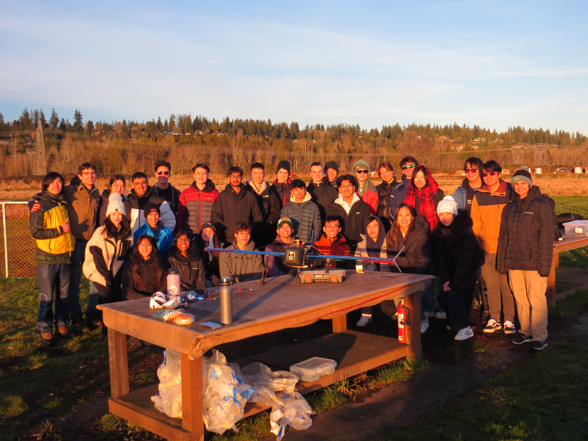

UBC Aerodesign
About UBC Aerodesign
UBC Aerodesign, founded in 1992, is a student run engineering design team that competes in the annual SAE Aerodesign competiton.
The SAE aerodesign compeititon is an international collegiate design compeition with three categories to compete in, Advanced, Micro and Regular.
I've always worked on the avionics subteams here at UBC Aerodesign. I've been on Power and Controls, who are responsible for the plane's typical flight electronics and power circuitry, the power plant (motor and propellor combination) and trimming of the control surfaces. I'm currently on Sensors and Communications, a subteam who's role is to design hardware and firmware to collect clean and reliable sensor data to be used by our software teams algorithms.
Here's a link to our website! UBC Aerodesign Website.
Year 2024-2025
Competition Overview
In 2025 UBC Aerodesign Competed in the ADV Class Division and Micro Class Division
ADV Goal: This year the ADV ruleset changed. The goal for ADV now is to build a plane that can either capture or deliver a target from a specified pick up location, fully autonomously. Ideally the plane can take off, capture payload, and land all autonomously.
MCR Goal: Micro class's goal was once again to design the smallest (shortest wingspan) airplane with the lightest empy weight that could also carry the most payload and take off in the shortest distance.
RTK (Real Time Kinematics)
RTK (Real Time Kinematics) allows for centimeter-level accuracy and sub-centimeter precision on positional data measurements.
The system involves:
- A stationary base that sits and acquires a highly accurate GNSS lock
- A moving rover (with its own GNSS module) that receives RTCM correction data from the base station
Testing RTK:
- I conducted the test by setting up the base station and having me (the rover) walk laps on a predetermined path with the rover antenna
- Before RTK correction (left): the data shows significant variation between laps despite following a consistent route
After RTK correction (right): the has much higher precision, the variation in position measurement between paths is almost nonexistent
RTK Example Setup
GNSS Data with No RTK
GNSS Data with RTK
Airspeed Sensor PCB
I designed an airspeed sensor board so that the mechanical teams could have more data to aid in their design and analysis.
These boards are designed to collect data from a pitot tube and either save the data to an SD card, or to our main flight controller. Two versions of the board were made, one mini and one full. Both boards feature:
- An MS4525DO airspeed sensor
- An STM32F103 read data from the airspeed sensor via I2C and to act as a CAN controller
- A CAN Transciever
- Broken out SPI, I2C, CANRX/TX, and UART pins
The full board additionally includes:
- A USB-UART converter (FDTI chip)
- An SD card connected to SPI
Everything was designed in Altium Designer. I spent a good amount of time optimizing the BOM to reduce costs. All boards on our team, including this one, are ordered through JLCPCB (please sponsor us!). Here are pictures of the boards below.
Airspeed Sensor Full
Airspeed Sensor Full 3D
Airspeed Sensor Mini (BOOT Pins Not Soldered)
Airspeed Sensor Mini 3D
Probing CAN Bus
Probing CANH and CANL
Test Flight
Our team recently had a very successful test flight! This is more of a win for the other subteams but I think it's too awesome not to share
Thank you to Renegade Flyers Club for piloting our plane and allowing us to use their field!
Test Flight Team Photo
Year 2023-2024
Competition Overview
In 2024 UBC Aerodesign Competed in the ADV Class Division and Micro Class Division
ADV Goal: The objective of the ADV class was once again to design an aircraft that could carry the maximum payload while also detecting colored ground targets. Upon identifying a target, the main aircraft would deploy a smaller autonomous plane, which would then navigate and land at the designated location.
MCR Goal: Micro class's goal was to design the smallest (shortest wingspan) airplane with the lightest empty weight that could carry the most payload and take off in the shortest distance.
Prelim: Power Sensing PCB
The goal was to measure the current and voltage going to our propulsion circuit. We wanted to be able to see how much power our motor was consuming for a given power plant configuration, and how close we were to the power limit.
The board was specced to be able to handle 30A coming from a 6s Lipo I chose a hall effect sensor for current sensing and a voltage divider for voltage sensing. I chose a hall effect sensor to avoid power losses in the propulsion circuit. I used differential amplifiers to amplify the output of the hall effect sensor, and put buffers on the voltage divider to ensure our output values matched our calculations.
I also designed the current and voltage sensing circuits for our initial flight controller board which used a shunt resistor instead.
Power Sensing PCB
Power Boards and Wiring Hubs
Our subteam also designed power boards and wiring hubs. The power board had a buck converter on it and was specced to convert ~16V (4s Lipo) to 5V while having a max output current of 15A. The wiring hub was designed to house our flight controller, the Cube Orange, while also reducing the rats nest of wires in the plane.
Our wiring hub supports hot swapping, has reverse polarity protection, and a fuse. We simulated parts of our circuit such as the hot swapping functionnality in LTSpice before adding them to our schematic.
Assortment of PCBs Designed by Our Subteam
Picture I Took While Soldering
Late Night Work Session
Competition
Competition this year was in Van Nuys in California. It rained really hard half the time we were there but we still got in some good flight attempts. This year was more relaxed for our subteam as we had more members at comp ths year (four of us instead of one). Wiring everything was relatively simple compared to last year as we had our custom wiring hub which helped reduce the rats nest of wires in the plane. Here's some photos from the competition!
Securing the Motor
Friends Assembling the ADV Plane
Team Photo at Competition
Year 2022-2023
Competition Overview
In 2023 UBC Aerodesign competed in the ADV Class Division and Regular Class Division.
ADV Goal: The objective of the ADV class was to design an aircraft that could carry the maximum payload while also detecting colored ground targets. Upon identifying a target, the main aircraft would deploy a smaller autonomous plane, which would then navigate and land at the designated location.
REG Goal: REG class's goal was to build a huge airplane that could carry plenty of payload while operating with an extremely low power limit.
This year I was a member on the Power and Propulsions subteam. We're in charge of keeping the plane powered as well as selecting a powerplant that will give us the best thrust. This was my first year on Aero!
ADV Hop Test in Intense Winds
Regular Class Plane 2023
Advanced Class Plane 2023
Wind Tunnel Testing
One of Power and Propulsion's responsiblities is selecting the optimal motor and propellor combination for each plane.
Our planes are given a 750 Watt power limit (which is very low) so any extra bit of thrust we can get matters.
To select the optimal power plant configuration, we test various combinations in the wind tunnel. We had a lot of spare propellors and motors this year, so rather than buying new ones, we tested whatever was in our current inventory.
In some years we do some calculations based on Gudmundsson's General Aviation Aircraft Design textbook to decied which props/motors but we still always conduct wind tunnel tests to confirm our choice.
Out thrust stand consists of a load cell connected to an Arduino Uno. In future years we planned to add more load cells to get data on the torsion from the motor and propellor.
Wind Tunnel Testing
Altium, Soldering, and Python
Altium: I learned the basics of Altium this year (my first year of university). We were designing a custom flight controller carrier board and so I learned how to read and create schematics, how to create Altium components and their footprints, and how to route PCBs.
Soldering: I also learned how to solder on my first year on the team. I soldered various wiring harnesses here and their. I believe I am currently very proficient at soldering.
Python: I also did some general data analysis of the wind tunnel data using Python. I also worked on a GUI in Tkinter to automate wind tunnel testing.
Competition
This competition was super busy for me since I was the only person on my subteam who went (my lead didn't attend)!
I was responsible for ensuring both planes were powered, trimmed, and good to fly meaning our role was very critical on the field. I was responsible for running through all the pre-flight checks and ensuring we passed inspection. There's also the fact that I had to manage two planes that added to the stress.
Regardless, I enjoyed the challenge and had a wonderful time at competition! Here are some pictures from comp!

Last Minute Soldering Repairs

Passing Inspection

Preparing the Flight Electronics for Flight

Talking to the Pilot Before Flight
Team Photo at Competition